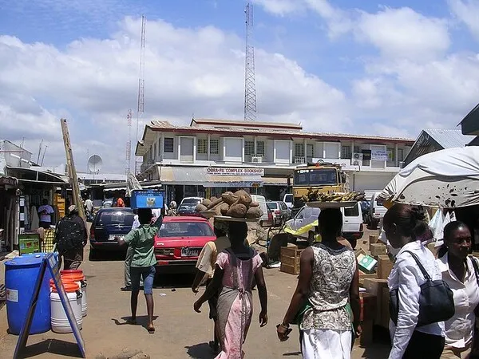
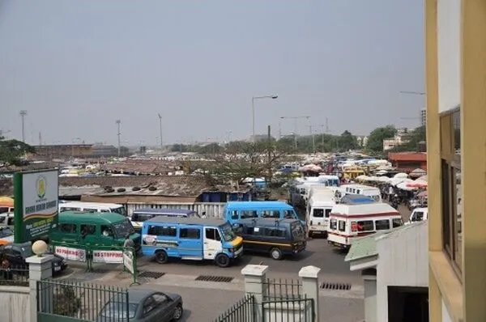
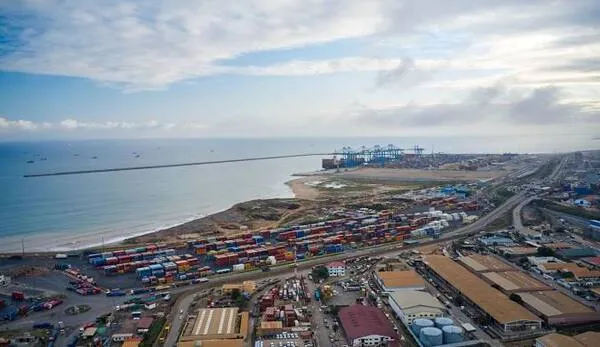
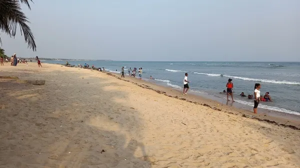

Scroll to discover the beauty and diversity of our port city.

Tema Harbor - Gateway to Ghana's Economy

Community Market - Local Commerce HubSakumono Beach - Coastal Beauty

Industrial Zone - Manufacturing HubHomowo Festival - Cultural Celebration

Tema Roundabout - City Landmark